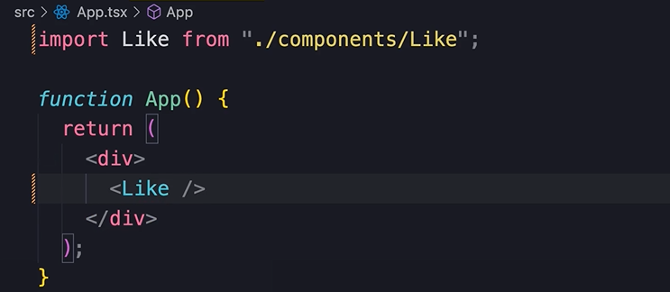
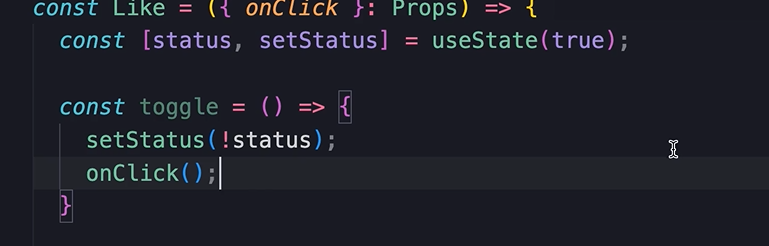
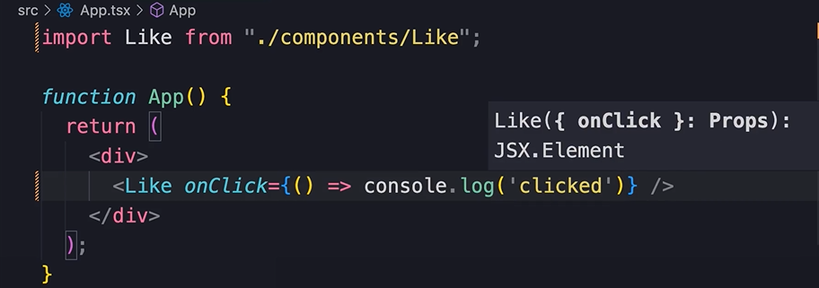

HOME
EXERCISE: Building a Like Component
Instructions
Build a heart that changes color when the user clicks, and also print
a message to the console each time.
Here is a hint...
Please keep the solution hidden until you have tried yourself.
SOLUTION
Create the file
We wont need a folder because there are no styles...
Use the shortcut...
Add Heart Icon
Search for a heart icon...
import it...
Add it in...

Add the like component to our app...

And we get a heart. Yay!
Customize Icon
Change the color and size of the heart...
useState
Now add a useState and an if return...
Then add a heart outline...
onClick
Now set the onClick to an arrow function that sets the status...
We also need an onClick for the outline.
Notifying the consumer
We should pass an onClick prop so that the consumer of this
component can run a function with it.
So create an onClick prop and add it to the param with a
destructure...

After setting the status in the onClick we need to call our
onClick prop, but that starts to look repetitive.
So instead create this toggle function...

Then pass toggle in the onClick instead of the setStatus...
Pass Function from consumer
Finally, pass a function from the consumer. Let's just console.log
somthing...

IMPORTANT TO NOTE
In this exercise we have initialized our state to true, but in a
real app this has to be done dynamically based on the content we
are displaying to the user.
For example, if we are showing a list of tweets, maybe the user
has only liked some of those tweets, not all of them.
So we shouldn't hard code a value like false or true, instead we
should have a prop for initializing the status variable.
For this example is doesn't matter though. We'll look at a real
example in the project build.